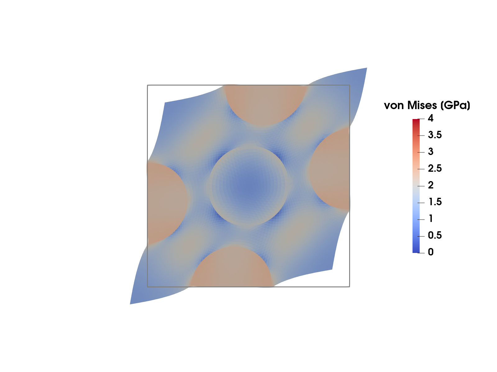
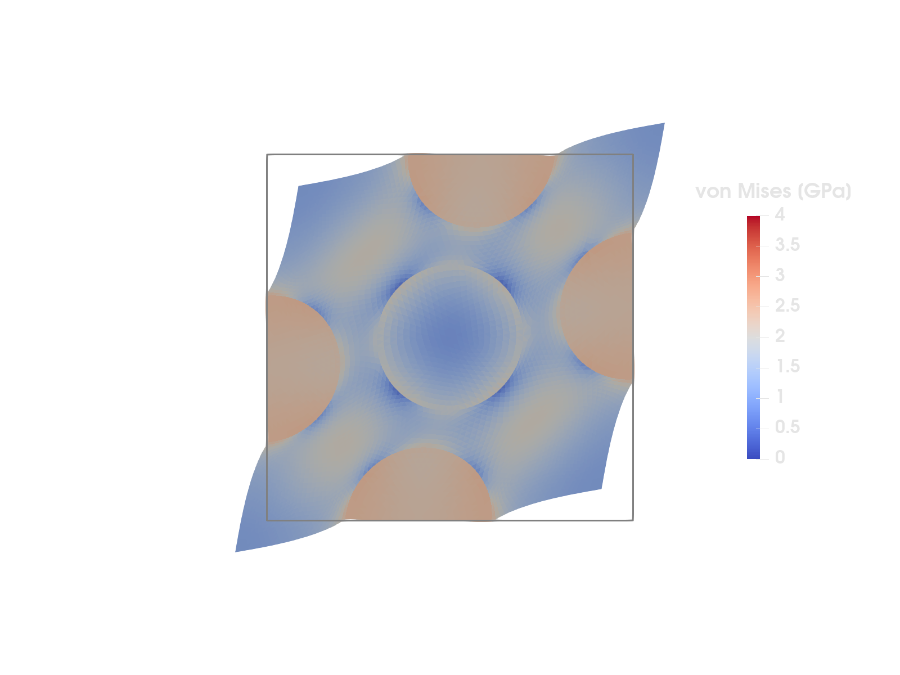

Stress-driven computational homogenization


Figure 1: von Mises stress in the RVE from the strain-driven homogenization tutorial, deformed by the total displacement (macroscopic plus fluctuation part) that results from the prescribed macroscopic shear stress $\bar{\sigma}_{12}$ – compare with the strain-driven (periodic) shear load case in that tutorial's Figure 1. The gray outline is the undeformed RVE (displacements exaggerated by a factor of 4; the wiggles of the boundary are the periodic fluctuation field, matching on opposite edges).
This example is also available as a Jupyter notebook: stress_driven_homogenization.ipynb.
Introduction
In the computational homogenization tutorial the Representative Volume Element (RVE) problem is strain-driven: the macroscopic strain $\bar{\boldsymbol{\varepsilon}}$ is prescribed, and the average stress $\bar{\boldsymbol{\sigma}} = \langle \boldsymbol{\sigma} \rangle_\Box$ is computed from the solution. In many applications the natural control variable is instead the stress: we want to prescribe the average stress $\bar{\boldsymbol{\sigma}}$ (for example uniaxial tension of a microstructure sample) and compute the resulting macroscopic strain $\bar{\boldsymbol{\varepsilon}}$, which is then an unknown of the problem.
This tutorial deliberately builds on the strain-driven one, which is best read first: the RVE concept, the split of the displacement into macroscopic and fluctuation parts, and the boundary condition choices for the fluctuation field are all introduced there and only briefly restated here.
The macroscopic strain is a single (tensorial) quantity for the whole RVE – it has no spatial variation and is not attached to the mesh. In Ferrite such unknowns are modeled as algebraic variables: an AlgebraicVariable declares a typed value (here a symmetric second order tensor) whose few degrees of freedom live in the DofHandler without belonging to any cell, and a coupling descriptor declares where the variable couples to the regular spatial fields – here to the displacement in every cell of the RVE. This is exactly the structure of a Lagrange multiplier that enforces an integral constraint – here, the constraint $\langle \boldsymbol{\sigma} \rangle_\Box = \bar{\boldsymbol{\sigma}}$.
Problem formulation
We consider linear elasticity on the same RVE $\Omega_\Box$ as in the strain-driven tutorial: five stiff circular inclusions embedded in a softer matrix. As there, the displacement is split into a macroscopic part and a fluctuation part,
\[\boldsymbol{u}(\boldsymbol{x}) = \bar{\boldsymbol{\varepsilon}} \cdot \boldsymbol{x} + \boldsymbol{u}^\mu(\boldsymbol{x}),\]
where we, like in the strain-driven tutorial, use periodic boundary conditions for the fluctuation field, $\llbracket \boldsymbol{u}^\mu \rrbracket_\Box = \boldsymbol{0}$ across the RVE (see there for the details and for the alternative choice of homogeneous Dirichlet conditions, which works here as well – simply swap the constraint below). The total strain is $\boldsymbol{\varepsilon} = \bar{\boldsymbol{\varepsilon}} + \boldsymbol{\varepsilon}[\boldsymbol{u}^\mu]$, and, in contrast to the strain-driven problem, $\bar{\boldsymbol{\varepsilon}}$ is now unknown.
The problem can be stated as a minimization of the potential energy
\[\Pi(\boldsymbol{u}^\mu, \bar{\boldsymbol{\varepsilon}}) = \frac{1}{2} \int_{\Omega_\Box} (\bar{\boldsymbol{\varepsilon}} + \boldsymbol{\varepsilon}[\boldsymbol{u}^\mu]) : \mathsf{E} : (\bar{\boldsymbol{\varepsilon}} + \boldsymbol{\varepsilon}[\boldsymbol{u}^\mu])\, \mathrm{d}\Omega - |\Omega_\Box|\, \bar{\boldsymbol{\sigma}} : \bar{\boldsymbol{\varepsilon}},\]
where the last term is the work of the prescribed average stress on the (unknown) average strain. Stationarity with respect to the two unknowns gives the coupled system: find $\boldsymbol{u}^\mu$ (periodic, as above) and $\bar{\boldsymbol{\varepsilon}}$ such that
\[\begin{aligned} \int_{\Omega_\Box} \boldsymbol{\varepsilon}[\delta\boldsymbol{u}] : \mathsf{E} : (\bar{\boldsymbol{\varepsilon}} + \boldsymbol{\varepsilon}[\boldsymbol{u}^\mu])\, \mathrm{d}\Omega &= 0 \quad &&\forall\, \delta\boldsymbol{u}, \\ \int_{\Omega_\Box} \delta\bar{\boldsymbol{\varepsilon}} : \mathsf{E} : (\bar{\boldsymbol{\varepsilon}} + \boldsymbol{\varepsilon}[\boldsymbol{u}^\mu])\, \mathrm{d}\Omega &= |\Omega_\Box|\, \bar{\boldsymbol{\sigma}} : \delta\bar{\boldsymbol{\varepsilon}} \quad &&\forall\, \delta\bar{\boldsymbol{\varepsilon}}, \end{aligned}\]
where the second equation is nothing but the stress constraint $\langle \boldsymbol{\sigma} \rangle_\Box = \bar{\boldsymbol{\sigma}}$.
Note the structure: the test/trial functions for $\bar{\boldsymbol{\varepsilon}}$ are constant over the whole RVE. Discretizing $\bar{\boldsymbol{\varepsilon}}$ with three scalar dofs (in 2D) therefore gives a stiffness matrix with a small, dense, fully-coupled block – and this is precisely what an algebraic variable coupled to all cells gives us, with no manual bookkeeping.
Representation of the macroscopic strain
$\bar{\boldsymbol{\varepsilon}}$ is a symmetric second order tensor with three independent components in 2D, which is exactly what AlgebraicVariable{SymmetricTensor{2, 2}} declares: one dof per independent component, ordered as $(1,1)$, $(2,1)$, $(2,2)$. The dof coefficients $\bar{e}_\alpha$ represent the tensor through the constant basis directions
\[\boldsymbol{E}_1 = \boldsymbol{e}_1 \otimes \boldsymbol{e}_1, \quad \boldsymbol{E}_2 = \boldsymbol{e}_1 \otimes \boldsymbol{e}_2 + \boldsymbol{e}_2 \otimes \boldsymbol{e}_1, \quad \boldsymbol{E}_3 = \boldsymbol{e}_2 \otimes \boldsymbol{e}_2,\]
i.e. $\bar{\boldsymbol{\varepsilon}} = \sum_{\alpha=1}^3 \bar{e}_\alpha \boldsymbol{E}_\alpha$. algebraic_value reconstructs the tensor from the coefficients, and algebraic_basis_value returns the directions $\boldsymbol{E}_\alpha$, which play the algebraic role of (constant) shape functions in the weak form below. Note that the basis is not orthonormal ($\boldsymbol{E}_2 : \boldsymbol{E}_2 = 2$) – this is perfectly fine as long as the same basis is used consistently, which it is, since both the reconstruction and the assembly below are expressed in it.
Commented program
We start by loading the required packages.
using Ferrite, SparseArrays, LinearAlgebraGrid and phases
We reuse the RVE mesh from the strain-driven tutorial: the Gmsh mesh "periodic-rve.msh" where the five inclusions make up the cellset "inclusions", read with FerriteGmsh.jl.
using FerriteGmshusing Downloads: Downloadsmeshfile = "periodic-rve.msh"isfile(meshfile) || Downloads.download(Ferrite.asset_url(meshfile), meshfile)grid = togrid(meshfile)incl_cells = getcellset(grid, "inclusions");Info : Reading 'periodic-rve-coarse.msh'...
Info : 38 entities
Info : 112 nodes
Info : 222 elements
Info : Done reading 'periodic-rve-coarse.msh'Material
Also the materials are the same as in the strain-driven tutorial: both phases are isotropic linear elastic (plane strain), and the inclusions are 10 times stiffer than the matrix. Note that the two phases then have the same Poisson's ratio $\nu = \lambda / (2 (\lambda + \mu))$, which we use for the stress export later.
λ, μ = 1.0e10, 7.0e9 # Lamé parameters of the matrixδ(i, j) = i == j ? 1.0 : 0.0Em = SymmetricTensor{4, 2}( (i, j, k, l) -> λ * δ(i, j) * δ(k, l) + μ * (δ(i, k) * δ(j, l) + δ(i, l) * δ(j, k)))Ei = 10 * Emν = λ / (2 * (λ + μ));Dofs
We add the fluctuation displacement :u as a regular vector-valued field and the macroscopic strain :εbar as an algebraic variable.
ip_u = Lagrange{RefTriangle, 1}()^2ε̄var = AlgebraicVariable{SymmetricTensor{2, 2}}()dh = DofHandler(grid)add!(dh, :u, ip_u)add!(dh, :εbar, ε̄var)close!(dh);nε = length(algebraic_dofs(dh, :εbar))3In contrast to a spatial field, the dofs of the algebraic variable are not part of the cell dofs (ndofs_per_cell counts only the 6 displacement dofs); they are numbered after all spatial dofs and queried with algebraic_dofs:
algebraic_dofs(dh, :εbar)3-element Vector{Int64}:
225
226
227Where the variable couples is declared explicitly with a coupling descriptor: a CellCoupling over all cells of the RVE declares the $\boldsymbol{u}$-$\bar{\boldsymbol{\varepsilon}}$ blocks (the tuple form is bidirectional) and, since $\boldsymbol{K}_{\varepsilon\varepsilon}$ is a full $3 \times 3$ block here, also the coupling of the variable with itself. The descriptor is used when allocating the matrix, to add the corresponding entries to the sparsity pattern.
coupling = CellCoupling(1:getncells(grid); algebraic_coupling = ((:u, :εbar), (:εbar, :εbar)));The fluctuation field is periodic across the RVE, which PeriodicDirichlet enforces with AffineConstraints between the "mirror" and "image" boundary dofs (see the strain-driven tutorial). The periodic constraints determine $\boldsymbol{u}^\mu$ only up to a constant translation (a zero-energy mode), so we additionally pin the fluctuation in the corner $(\tfrac{1}{2}, \tfrac{1}{2})$ (the periodicity ties all four corners together, so this grounds all of them). The same constraints are needed again in the verification and in the blocked solve at the end of the tutorial, so we match the periodic facet pairs and the corner vertex once, and share a small helper that adds the constraints to a ConstraintHandler:
periodic_facets = collect_periodic_facets(grid, "left", "right")collect_periodic_facets!(periodic_facets, grid, "bottom", "top")addvertexset!(grid, "corner", x -> x ≈ Vec((0.5, 0.5)))corner = getvertexset(grid, "corner")function add_fluctuation_constraints!(ch, periodic_facets, corner) add!(ch, PeriodicDirichlet(:u, periodic_facets, [1, 2])) add!(ch, Dirichlet(:u, corner, x -> zero(Vec{2}))) return chendch = ConstraintHandler(dh)add_fluctuation_constraints!(ch, periodic_facets, corner)close!(ch);FE values
The evaluation data for the spatial and algebraic variables are constructed once and passed to the assembly routine. AlgebraicValues caches the three constant basis directions $\boldsymbol{E}_\alpha$.
qr = QuadratureRule{RefTriangle}(2)cv_u = CellValues(qr, ip_u)av_ε = AlgebraicValues(ε̄var);Assembly
The (augmented) element stiffness has the block structure
\[\boldsymbol{K}^e = \begin{bmatrix} \boldsymbol{K}^e_{uu} & \boldsymbol{K}^e_{u\varepsilon} \\ (\boldsymbol{K}^e_{u\varepsilon})^\mathrm{T} & \boldsymbol{K}^e_{\varepsilon\varepsilon} \end{bmatrix}, \qquad (K^e_{uu})_{ij} = \int \boldsymbol{\varepsilon}[\boldsymbol{N}_i] : \mathsf{E} : \boldsymbol{\varepsilon}[\boldsymbol{N}_j]\, \mathrm{d}\Omega, \quad (K^e_{u\varepsilon})_{i\beta} = \int \boldsymbol{\varepsilon}[\boldsymbol{N}_i] : \mathsf{E} : \boldsymbol{E}_\beta\, \mathrm{d}\Omega, \quad (K^e_{\varepsilon\varepsilon})_{\alpha\beta} = \int \boldsymbol{E}_\alpha : \mathsf{E} : \boldsymbol{E}_\beta\, \mathrm{d}\Omega,\]
and the only non-zero right hand side entries are the ones for the algebraic variable, $f_\beta = |\Omega^e|\, \bar{\boldsymbol{\sigma}} : \boldsymbol{E}_\beta$. The assembly loop looks just like any other two-field loop; the only new ingredient is that the local system is augmented with the algebraic dofs. Since they are global dofs, shared by every cell, their numbers (from algebraic_dofs) are appended after the cell dofs once, outside the loop, and only the cell dofs are refreshed per cell. The local ranges of the two variables are constant for the same reason. The augmented Ke/fe are scattered by the standard assembler. (One thing to keep in mind for large problems: since the algebraic dofs are shared between all cells, colored threaded assembly is not applicable – the supported threaded path is the atomic assembler, see the algebraic variables topic guide.) The optional last argument ch condenses the constraints during assembly with apply_assemble! instead of apply! after assembly – this is used in the blocked solve at the end of the tutorial.
function assemble_system!(K, f, dh, cv_u, av_ε, σ̄, Ei, Em, incl_cells, ch = nothing) n = ndofs_per_cell(dh) nε = getnbasefunctions(av_ε) dofs = Vector{Int}(undef, n + nε) dofs[(n + 1):end] .= algebraic_dofs(dh, :εbar) # constant tail, written once range_u = dof_range(dh, :u) range_ε = (n + 1):(n + nε) # local placement of the strain dofs Ke = zeros(n + nε, n + nε) fe = zeros(n + nε) assembler = start_assemble(K, f) for cell in CellIterator(dh) reinit!(cv_u, cell) copyto!(dofs, celldofs(cell)) # refresh the first n entries fill!(Ke, 0) fill!(fe, 0) E = cellid(cell) in incl_cells ? Ei : Em for qp in 1:getnquadpoints(cv_u) dΩ = getdetJdV(cv_u, qp) for (iu, I) in pairs(range_u) δεi = shape_symmetric_gradient(cv_u, qp, iu) for (ju, J) in pairs(range_u) εj = shape_symmetric_gradient(cv_u, qp, ju) Ke[I, J] += (δεi ⊡ E ⊡ εj) * dΩ end for (jε, J) in pairs(range_ε) Eⱼ = algebraic_basis_value(av_ε, jε) v = (δεi ⊡ E ⊡ Eⱼ) * dΩ Ke[I, J] += v Ke[J, I] += v end end for (iε, I) in pairs(range_ε) Eᵢ = algebraic_basis_value(av_ε, iε) fe[I] += (σ̄ ⊡ Eᵢ) * dΩ for (jε, J) in pairs(range_ε) Eⱼ = algebraic_basis_value(av_ε, jε) Ke[I, J] += (Eᵢ ⊡ E ⊡ Eⱼ) * dΩ end end end if ch === nothing assemble!(assembler, dofs, Ke, fe) else apply_assemble!(assembler, ch, dofs, Ke, fe) end end return K, fend;We prescribe a pure macroscopic shear stress – the load case whose strain-driven counterpart is visualized in the strain-driven tutorial:
σ̄ = SymmetricTensor{2, 2}((0.0, 1.0e9, 0.0)) # σ̄₁₂ = σ̄₂₁ = 1 GPa, rest zero2×2 SymmetricTensor{2, 2, Float64, 3}:
0.0 1.0e9
1.0e9 0.0and assemble and solve. The coupling descriptor is passed to allocate_matrix with the algebraic_couplings keyword so that the $\bar{\boldsymbol{\varepsilon}}$-$\boldsymbol{u}$ entries are part of the sparsity pattern:
K = allocate_matrix(dh, ch; algebraic_couplings = (coupling,))f = zeros(ndofs(dh))assemble_system!(K, f, dh, cv_u, av_ε, σ̄, Ei, Em, incl_cells)apply!(K, f, ch)a = K \ fapply!(a, ch);Results
The macroscopic strain tensor is reconstructed directly from the solution vector with algebraic_value:
ε̄ = algebraic_value(dh, a, :εbar)2×2 SymmetricTensor{2, 2, Float64, 3}:
1.84228e-7 0.0427984
0.0427984 4.28171e-6For this shear stress state we can read off the effective shear modulus (the normal strain components stay small – the microstructure is nearly shear/normal decoupled):
Ḡ = σ̄[1, 2] / (2 * ε̄[1, 2])1.1682682669667076e10Verification
First we check that the constraint really is satisfied: the average stress, computed by integrating the stress field over the RVE, must equal the prescribed $\bar{\boldsymbol{\sigma}}$. The total strain in a quadrature point is the (constant) reconstructed macroscopic tensor plus the fluctuation gradient. Note that celldofs contains only the displacement dofs – the algebraic dofs never appear there.
function average_stress(a, dh, cv_u, Ei, Em, incl_cells) ε̄ = algebraic_value(dh, a, :εbar) σΩ = zero(SymmetricTensor{2, 2}) vol = 0.0 for cell in CellIterator(dh) reinit!(cv_u, cell) ae = a[celldofs(cell)] E = cellid(cell) in incl_cells ? Ei : Em for qp in 1:getnquadpoints(cv_u) dΩ = getdetJdV(cv_u, qp) ε = ε̄ + function_symmetric_gradient(cv_u, qp, ae) σΩ += (E ⊡ ε) * dΩ vol += dΩ end end return σΩ / volendσ̄_check = average_stress(a, dh, cv_u, Ei, Em, incl_cells)σ̄_check ≈ σ̄trueSecond, we verify against the strain-driven problem. Eliminating the fluctuation dofs from the coupled system gives the Schur complement
\[\bar{\mathsf{E}} = \frac{1}{|\Omega_\Box|} \left( \boldsymbol{K}_{\varepsilon\varepsilon} - \boldsymbol{K}_{u\varepsilon}^\mathrm{T} \boldsymbol{K}_{uu}^{-1} \boldsymbol{K}_{u\varepsilon} \right),\]
which is exactly the (periodic boundary condition) effective stiffness that the strain-driven tutorial computes with one linear solve per unit strain (here expressed in the basis $\{\boldsymbol{E}_\alpha\}$). The stress-driven solution must satisfy $\bar{\boldsymbol{e}} = \bar{\mathsf{E}}^{-1} \bar{\boldsymbol{s}}$ with $\bar{s}_\alpha = \bar{\boldsymbol{\sigma}} : \boldsymbol{E}_\alpha$. We compute $\bar{\mathsf{E}}$ by three strain-driven solves: prescribe $\bar{\boldsymbol{\varepsilon}} = \boldsymbol{E}_\beta$, solve for the fluctuation, and average the stress. The three solves share one matrix: the constraint handlers differ only in the values prescribed to the algebraic dofs, and the condensation of the matrix is independent of those values, so we condense and factorize once and only treat the right hand side per unit strain, with get_rhs_data and apply_rhs! (the same technique as in the strain-driven tutorial). The matrix is assembled anew since the monolithic solve above condensed K in place.
function effective_stiffness(dh, cv_u, av_ε, coupling, Ei, Em, incl_cells, periodic_facets, corner) nε = getnbasefunctions(av_ε) gdofs = algebraic_dofs(dh, :εbar) # One constraint handler per unit strain Eβ, prescribing the algebraic dofs chs = map(1:nε) do β chβ = ConstraintHandler(dh) add_fluctuation_constraints!(chβ, periodic_facets, corner) for (α, gdof) in pairs(gdofs) add!(chβ, AffineConstraint(gdof, Pair{Int, Float64}[], α == β ? 1.0 : 0.0)) end return close!(chβ) end K = allocate_matrix(dh, chs[1]; algebraic_couplings = (coupling,)) assemble_system!(K, zeros(ndofs(dh)), dh, cv_u, av_ε, zero(SymmetricTensor{2, 2}), Ei, Em, incl_cells) rhsdata = get_rhs_data(chs[1], K) apply!(K, chs[1]) F = lu(K) Ē = zeros(nε, nε) for (β, chβ) in pairs(chs) fβ = zeros(ndofs(dh)) apply_rhs!(rhsdata, fβ, chβ) aβ = F \ fβ apply!(aβ, chβ) # Read off the resulting average stress column σ̄β = average_stress(aβ, dh, cv_u, Ei, Em, incl_cells) for α in 1:nε Ē[α, β] = σ̄β ⊡ algebraic_basis_value(av_ε, α) end end return ĒendĒ = effective_stiffness(dh, cv_u, av_ε, coupling, Ei, Em, incl_cells, periodic_facets, corner)3×3 Matrix{Float64}:
4.30443e10 -1.61992e6 1.43401e10
-1.61992e6 4.67307e10 -4.37086e6
1.43401e10 -4.37086e6 4.30725e10Note how the strain-driven problem reuses the same algebraic variable: prescribing $\bar{\boldsymbol{\varepsilon}}$ is just a matter of constraining the three algebraic dofs (with AffineConstraints – Dirichlet conditions are boundary-bound and deliberately reject algebraic variables).
The strain coefficients from the stress-driven solve agree with the inverse of the effective stiffness applied to the prescribed stress:
ē = Ē \ [σ̄ ⊡ algebraic_basis_value(av_ε, α) for α in 1:nε]maximum(abs, ē - a[algebraic_dofs(dh, :εbar)])4.85722573273506e-17Finally a plausibility check of the effective stiffness against the Voigt and Reuss bounds (see the strain-driven tutorial for their definition and discussion). The bounds hold in the sense of quadratic forms, and the diagonal entries of $\bar{\mathsf{E}}$ are exactly such quadratic forms, $\bar{\mathsf{E}}^{(\alpha\alpha)} = \boldsymbol{E}_\alpha : \bar{\mathsf{E}} : \boldsymbol{E}_\alpha$, so we compare them against the same forms of the bounds. For the first basis direction this is simply the $1111$ component; for the shear direction note that $\boldsymbol{E}_2 : \mathsf{E} : \boldsymbol{E}_2 = 4\, \mathsf{E}_{1212}$ (both off-diagonal slots of $\boldsymbol{E}_2$ carry a one), so the shear stiffness component is $\bar{\mathsf{E}}^{(22)} / 4$. Note also that a stiffness component is not the same thing as the stress-controlled modulus $\bar{G}$ computed above (which is the inverse of a compliance component). The volume fraction of the inclusions is computed by integration (we also keep the total volume $|\Omega_\Box|$ for the last section).
function domain_volumes(dh, cv, incl_cells) Ω = Ωi = 0.0 for cell in CellIterator(dh) reinit!(cv, cell) for qp in 1:getnquadpoints(cv) dΩ = getdetJdV(cv, qp) Ω += dΩ if cellid(cell) in incl_cells Ωi += dΩ end end end return Ω, ΩiendΩ_box, Ω_incl = domain_volumes(dh, cv_u, incl_cells)v_incl = Ω_incl / Ω_boxE_voigt = v_incl * Ei + (1 - v_incl) * EmE_reuss = inv(v_incl * inv(Ei) + (1 - v_incl) * inv(Em))Ē11_bounds = (E_reuss[1, 1, 1, 1], E_voigt[1, 1, 1, 1])Ē11_bounds[1] <= Ē[1, 1] <= Ē11_bounds[2]trueĒ1212_bounds = (E_reuss[1, 2, 1, 2], E_voigt[1, 2, 1, 2])Ē1212_bounds[1] <= Ē[2, 2] / 4 <= Ē1212_bounds[2]trueExport
For visualization we compute the von Mises stress and export it together with the fluctuation field. write_solution exports the spatial fields; the algebraic variable is not a field over the mesh and is deliberately not exported (its value is read with algebraic_value as above). In plane strain the out-of-plane stress $\sigma_{33} = \nu (\sigma_{11} + \sigma_{22})$ does not vanish and must be included in the von Mises invariant (both phases have the same Poisson's ratio here, see the Material section).
function von_mises_stress(a, dh, cv_u, Ei, Em, incl_cells, ν) ε̄ = algebraic_value(dh, a, :εbar) σvM = zeros(getncells(dh.grid)) for cell in CellIterator(dh) reinit!(cv_u, cell) ae = a[celldofs(cell)] E = cellid(cell) in incl_cells ? Ei : Em vol = 0.0 for qp in 1:getnquadpoints(cv_u) dΩ = getdetJdV(cv_u, qp) ε = ε̄ + function_symmetric_gradient(cv_u, qp, ae) σ = E ⊡ ε σ33 = ν * (σ[1, 1] + σ[2, 2]) # plane strain σ3d = SymmetricTensor{2, 3}((σ[1, 1], σ[2, 1], 0.0, σ[2, 2], 0.0, σ33)) s = dev(σ3d) σvM[cellid(cell)] += √(3 / 2 * s ⊡ s) * dΩ vol += dΩ end σvM[cellid(cell)] /= vol end return σvMendvon_mises_stress (generic function with 1 method)Since the exported :u is only the fluctuation (which does not show the macroscopic deformation), we also export the total displacement $\boldsymbol{u} = \bar{\boldsymbol{\varepsilon}} \cdot \boldsymbol{x} + \boldsymbol{u}^\mu$, which is what deforms the RVE (see Figure 1).
uμ_nodes = evaluate_at_grid_nodes(dh, a, :u)u_total = [ε̄ ⋅ get_node_coordinate(grid, n) + uμ_nodes[n] for n in 1:getnnodes(grid)]phase = zeros(getncells(grid)); phase[collect(incl_cells)] .= 1.0VTKGridFile("stress_driven_homogenization", dh) do vtk write_solution(vtk, dh, a) write_node_data(vtk, u_total, "u_total") write_cell_data(vtk, von_mises_stress(a, dh, cv_u, Ei, Em, incl_cells, ν), "vonMises") write_cell_data(vtk, phase, "phase")end;Advanced: blocked matrix and a Schur complement solve
The monolithic solve above is the right choice at this problem size: direct sparse solvers are unfazed by the three dense rows and columns that the algebraic variable creates ($\bar{\boldsymbol{\varepsilon}}$ couples with every displacement dof), and K \ f is as simple as it gets. The situation changes for large RVEs – think fine 3D meshes – where a direct factorization becomes too expensive and one switches to an iterative solver: standard preconditioners for elasticity (algebraic multigrid, incomplete factorizations) are designed for the sparse SPD displacement block and degrade badly on a matrix with dense-coupled rows. The remedy is to make the block structure
\[\begin{bmatrix} \boldsymbol{K}_{uu} & \boldsymbol{K}_{u\varepsilon} \\ \boldsymbol{K}_{u\varepsilon}^\mathrm{T} & \boldsymbol{K}_{\varepsilon\varepsilon} \end{bmatrix} \begin{bmatrix} \boldsymbol{u}^\mu \\ \bar{\boldsymbol{e}} \end{bmatrix} = \begin{bmatrix} \boldsymbol{0} \\ \boldsymbol{f}_\varepsilon \end{bmatrix}\]
explicit and eliminate the algebraic dofs with the Schur complement
\[\boldsymbol{S} = \boldsymbol{K}_{\varepsilon\varepsilon} - \boldsymbol{K}_{u\varepsilon}^\mathrm{T} \boldsymbol{K}_{uu}^{-1} \boldsymbol{K}_{u\varepsilon}, \qquad \boldsymbol{S} \bar{\boldsymbol{e}} = \boldsymbol{f}_\varepsilon, \qquad \boldsymbol{u}^\mu = -\boldsymbol{K}_{uu}^{-1} \boldsymbol{K}_{u\varepsilon} \bar{\boldsymbol{e}},\]
so that the solver only ever touches the purely sparse $\boldsymbol{K}_{uu}$: forming $\boldsymbol{S}$ costs one $\boldsymbol{K}_{uu}$-solve per algebraic dof (here three), which is where the iterative solver – or, at this size, a single Cholesky factorization with multiple right hand sides – slots in. As a bonus, $\boldsymbol{S} = |\Omega_\Box| \bar{\mathsf{E}}$: the Schur complement is the effective stiffness from the verification above, so it falls out of the solver for free.
Ferrite supports this workflow through the BlockArrays.jl package extension.
using BlockArraysBlocked matrices require blocked dofs: the :u dofs must form the first block and the three :εbar dofs the last. This is already the case here, since algebraic dofs are always numbered after all spatial dofs, and :u is the only spatial field. (With several spatial fields, renumber with DofOrder.FieldWise to sort the spatial dofs into per-field blocks – the algebraic variables remain the trailing blocks.)
gdofs = algebraic_dofs(dh, :εbar)nu = ndofs(dh) - nεgdofs == collect((nu + 1):ndofs(dh))trueThe blocked sparsity pattern is filled by the same generic add_sparsity_entries! (with the same algebraic_couplings keyword), and allocate_matrix instantiates a BlockMatrix with sparse blocks from it. The right hand side is a matching BlockVector. Assembly reuses assemble_system! unchanged – the assembler dispatches on the matrix type – but now we pass ch, since apply! after assembly is not supported for BlockMatrix. Instead the constraints are condensed during assembly with apply_assemble!: it condenses element-locally where possible and writes the remaining couplings (the periodic constraints tie dofs from different elements) directly into the global matrix, which is why add_sparsity_entries! gets the constraint handler.
bsp = BlockSparsityPattern([nu, nε])add_sparsity_entries!(bsp, dh, ch; algebraic_couplings = (coupling,))Kb = allocate_matrix(BlockMatrix, bsp)fb = mortar([zeros(nu), zeros(nε)])assemble_system!(Kb, fb, dh, cv_u, av_ε, σ̄, Ei, Em, incl_cells, ch);The blocks are ordinary matrices (SparseMatrixCSC for the sparse ones), so the Schur complement solve is a direct transcription of the formulas: one Cholesky factorization of $\boldsymbol{K}_{uu}$ serves the three coupling columns, the (here trivial) displacement load, and the back substitution.
function solve_schur(Kb, fb) K_uu = Kb[Block(1), Block(1)] # sparse, SPD after condensation K_uε = Matrix(Kb[Block(1), Block(2)]) # the three "dense columns" (small: n_u × 3) K_εε = Matrix(Kb[Block(2), Block(2)]) # 3 × 3 F = cholesky(Symmetric(K_uu)) Y = F \ K_uε # K_uu⁻¹ K_uε S = K_εε - K_uε' * Y # Schur complement u_f = F \ fb[Block(1)] # zero here, kept for generality ē = S \ (fb[Block(2)] - K_uε' * u_f) uμ = u_f - Y * ē return uμ, ē, Senduμ, ē_b, S = solve_schur(Kb, fb);The macroscopic strain tensor is reconstructed from the extracted coefficient slice with the DofHandler-free method of algebraic_value. It agrees with the monolithic solve, and the Schur complement, scaled by the RVE volume, with the effective stiffness computed by the three strain-driven solves in the verification:
ε̄_b = algebraic_value(av_ε, ē_b)maximum(abs, ε̄_b - ε̄)2.0816681711721685e-17maximum(abs, S / Ω_box - Ē) / maximum(abs, Ē)1.795891864456426e-15Plain program
Here follows a version of the program without any comments. The file is also available here: stress_driven_homogenization.jl.
using Ferrite, SparseArrays, LinearAlgebrausing FerriteGmshusing Downloads: Downloadsmeshfile = "periodic-rve.msh"isfile(meshfile) || Downloads.download(Ferrite.asset_url(meshfile), meshfile)grid = togrid(meshfile)incl_cells = getcellset(grid, "inclusions");λ, μ = 1.0e10, 7.0e9 # Lamé parameters of the matrixδ(i, j) = i == j ? 1.0 : 0.0Em = SymmetricTensor{4, 2}( (i, j, k, l) -> λ * δ(i, j) * δ(k, l) + μ * (δ(i, k) * δ(j, l) + δ(i, l) * δ(j, k)))Ei = 10 * Emν = λ / (2 * (λ + μ));ip_u = Lagrange{RefTriangle, 1}()^2ε̄var = AlgebraicVariable{SymmetricTensor{2, 2}}()dh = DofHandler(grid)add!(dh, :u, ip_u)add!(dh, :εbar, ε̄var)close!(dh);nε = length(algebraic_dofs(dh, :εbar))algebraic_dofs(dh, :εbar)coupling = CellCoupling(1:getncells(grid); algebraic_coupling = ((:u, :εbar), (:εbar, :εbar)));periodic_facets = collect_periodic_facets(grid, "left", "right")collect_periodic_facets!(periodic_facets, grid, "bottom", "top")addvertexset!(grid, "corner", x -> x ≈ Vec((0.5, 0.5)))corner = getvertexset(grid, "corner")function add_fluctuation_constraints!(ch, periodic_facets, corner) add!(ch, PeriodicDirichlet(:u, periodic_facets, [1, 2])) add!(ch, Dirichlet(:u, corner, x -> zero(Vec{2}))) return chendch = ConstraintHandler(dh)add_fluctuation_constraints!(ch, periodic_facets, corner)close!(ch);qr = QuadratureRule{RefTriangle}(2)cv_u = CellValues(qr, ip_u)av_ε = AlgebraicValues(ε̄var);function assemble_system!(K, f, dh, cv_u, av_ε, σ̄, Ei, Em, incl_cells, ch = nothing) n = ndofs_per_cell(dh) nε = getnbasefunctions(av_ε) dofs = Vector{Int}(undef, n + nε) dofs[(n + 1):end] .= algebraic_dofs(dh, :εbar) # constant tail, written once range_u = dof_range(dh, :u) range_ε = (n + 1):(n + nε) # local placement of the strain dofs Ke = zeros(n + nε, n + nε) fe = zeros(n + nε) assembler = start_assemble(K, f) for cell in CellIterator(dh) reinit!(cv_u, cell) copyto!(dofs, celldofs(cell)) # refresh the first n entries fill!(Ke, 0) fill!(fe, 0) E = cellid(cell) in incl_cells ? Ei : Em for qp in 1:getnquadpoints(cv_u) dΩ = getdetJdV(cv_u, qp) for (iu, I) in pairs(range_u) δεi = shape_symmetric_gradient(cv_u, qp, iu) for (ju, J) in pairs(range_u) εj = shape_symmetric_gradient(cv_u, qp, ju) Ke[I, J] += (δεi ⊡ E ⊡ εj) * dΩ end for (jε, J) in pairs(range_ε) Eⱼ = algebraic_basis_value(av_ε, jε) v = (δεi ⊡ E ⊡ Eⱼ) * dΩ Ke[I, J] += v Ke[J, I] += v end end for (iε, I) in pairs(range_ε) Eᵢ = algebraic_basis_value(av_ε, iε) fe[I] += (σ̄ ⊡ Eᵢ) * dΩ for (jε, J) in pairs(range_ε) Eⱼ = algebraic_basis_value(av_ε, jε) Ke[I, J] += (Eᵢ ⊡ E ⊡ Eⱼ) * dΩ end end end if ch === nothing assemble!(assembler, dofs, Ke, fe) else apply_assemble!(assembler, ch, dofs, Ke, fe) end end return K, fend;σ̄ = SymmetricTensor{2, 2}((0.0, 1.0e9, 0.0)) # σ̄₁₂ = σ̄₂₁ = 1 GPa, rest zeroK = allocate_matrix(dh, ch; algebraic_couplings = (coupling,))f = zeros(ndofs(dh))assemble_system!(K, f, dh, cv_u, av_ε, σ̄, Ei, Em, incl_cells)apply!(K, f, ch)a = K \ fapply!(a, ch);ε̄ = algebraic_value(dh, a, :εbar)Ḡ = σ̄[1, 2] / (2 * ε̄[1, 2])function average_stress(a, dh, cv_u, Ei, Em, incl_cells) ε̄ = algebraic_value(dh, a, :εbar) σΩ = zero(SymmetricTensor{2, 2}) vol = 0.0 for cell in CellIterator(dh) reinit!(cv_u, cell) ae = a[celldofs(cell)] E = cellid(cell) in incl_cells ? Ei : Em for qp in 1:getnquadpoints(cv_u) dΩ = getdetJdV(cv_u, qp) ε = ε̄ + function_symmetric_gradient(cv_u, qp, ae) σΩ += (E ⊡ ε) * dΩ vol += dΩ end end return σΩ / volendσ̄_check = average_stress(a, dh, cv_u, Ei, Em, incl_cells)σ̄_check ≈ σ̄function effective_stiffness(dh, cv_u, av_ε, coupling, Ei, Em, incl_cells, periodic_facets, corner) nε = getnbasefunctions(av_ε) gdofs = algebraic_dofs(dh, :εbar) # One constraint handler per unit strain Eβ, prescribing the algebraic dofs chs = map(1:nε) do β chβ = ConstraintHandler(dh) add_fluctuation_constraints!(chβ, periodic_facets, corner) for (α, gdof) in pairs(gdofs) add!(chβ, AffineConstraint(gdof, Pair{Int, Float64}[], α == β ? 1.0 : 0.0)) end return close!(chβ) end K = allocate_matrix(dh, chs[1]; algebraic_couplings = (coupling,)) assemble_system!(K, zeros(ndofs(dh)), dh, cv_u, av_ε, zero(SymmetricTensor{2, 2}), Ei, Em, incl_cells) rhsdata = get_rhs_data(chs[1], K) apply!(K, chs[1]) F = lu(K) Ē = zeros(nε, nε) for (β, chβ) in pairs(chs) fβ = zeros(ndofs(dh)) apply_rhs!(rhsdata, fβ, chβ) aβ = F \ fβ apply!(aβ, chβ) # Read off the resulting average stress column σ̄β = average_stress(aβ, dh, cv_u, Ei, Em, incl_cells) for α in 1:nε Ē[α, β] = σ̄β ⊡ algebraic_basis_value(av_ε, α) end end return ĒendĒ = effective_stiffness(dh, cv_u, av_ε, coupling, Ei, Em, incl_cells, periodic_facets, corner)ē = Ē \ [σ̄ ⊡ algebraic_basis_value(av_ε, α) for α in 1:nε]maximum(abs, ē - a[algebraic_dofs(dh, :εbar)])function domain_volumes(dh, cv, incl_cells) Ω = Ωi = 0.0 for cell in CellIterator(dh) reinit!(cv, cell) for qp in 1:getnquadpoints(cv) dΩ = getdetJdV(cv, qp) Ω += dΩ if cellid(cell) in incl_cells Ωi += dΩ end end end return Ω, ΩiendΩ_box, Ω_incl = domain_volumes(dh, cv_u, incl_cells)v_incl = Ω_incl / Ω_boxE_voigt = v_incl * Ei + (1 - v_incl) * EmE_reuss = inv(v_incl * inv(Ei) + (1 - v_incl) * inv(Em))Ē11_bounds = (E_reuss[1, 1, 1, 1], E_voigt[1, 1, 1, 1])Ē11_bounds[1] <= Ē[1, 1] <= Ē11_bounds[2]Ē1212_bounds = (E_reuss[1, 2, 1, 2], E_voigt[1, 2, 1, 2])Ē1212_bounds[1] <= Ē[2, 2] / 4 <= Ē1212_bounds[2]function von_mises_stress(a, dh, cv_u, Ei, Em, incl_cells, ν) ε̄ = algebraic_value(dh, a, :εbar) σvM = zeros(getncells(dh.grid)) for cell in CellIterator(dh) reinit!(cv_u, cell) ae = a[celldofs(cell)] E = cellid(cell) in incl_cells ? Ei : Em vol = 0.0 for qp in 1:getnquadpoints(cv_u) dΩ = getdetJdV(cv_u, qp) ε = ε̄ + function_symmetric_gradient(cv_u, qp, ae) σ = E ⊡ ε σ33 = ν * (σ[1, 1] + σ[2, 2]) # plane strain σ3d = SymmetricTensor{2, 3}((σ[1, 1], σ[2, 1], 0.0, σ[2, 2], 0.0, σ33)) s = dev(σ3d) σvM[cellid(cell)] += √(3 / 2 * s ⊡ s) * dΩ vol += dΩ end σvM[cellid(cell)] /= vol end return σvMenduμ_nodes = evaluate_at_grid_nodes(dh, a, :u)u_total = [ε̄ ⋅ get_node_coordinate(grid, n) + uμ_nodes[n] for n in 1:getnnodes(grid)]phase = zeros(getncells(grid)); phase[collect(incl_cells)] .= 1.0VTKGridFile("stress_driven_homogenization", dh) do vtk write_solution(vtk, dh, a) write_node_data(vtk, u_total, "u_total") write_cell_data(vtk, von_mises_stress(a, dh, cv_u, Ei, Em, incl_cells, ν), "vonMises") write_cell_data(vtk, phase, "phase")end;using BlockArraysgdofs = algebraic_dofs(dh, :εbar)nu = ndofs(dh) - nεgdofs == collect((nu + 1):ndofs(dh))bsp = BlockSparsityPattern([nu, nε])add_sparsity_entries!(bsp, dh, ch; algebraic_couplings = (coupling,))Kb = allocate_matrix(BlockMatrix, bsp)fb = mortar([zeros(nu), zeros(nε)])assemble_system!(Kb, fb, dh, cv_u, av_ε, σ̄, Ei, Em, incl_cells, ch);function solve_schur(Kb, fb) K_uu = Kb[Block(1), Block(1)] # sparse, SPD after condensation K_uε = Matrix(Kb[Block(1), Block(2)]) # the three "dense columns" (small: n_u × 3) K_εε = Matrix(Kb[Block(2), Block(2)]) # 3 × 3 F = cholesky(Symmetric(K_uu)) Y = F \ K_uε # K_uu⁻¹ K_uε S = K_εε - K_uε' * Y # Schur complement u_f = F \ fb[Block(1)] # zero here, kept for generality ē = S \ (fb[Block(2)] - K_uε' * u_f) uμ = u_f - Y * ē return uμ, ē, Senduμ, ē_b, S = solve_schur(Kb, fb);ε̄_b = algebraic_value(av_ε, ē_b)maximum(abs, ε̄_b - ε̄)maximum(abs, S / Ω_box - Ē) / maximum(abs, Ē)This page was generated using Literate.jl.